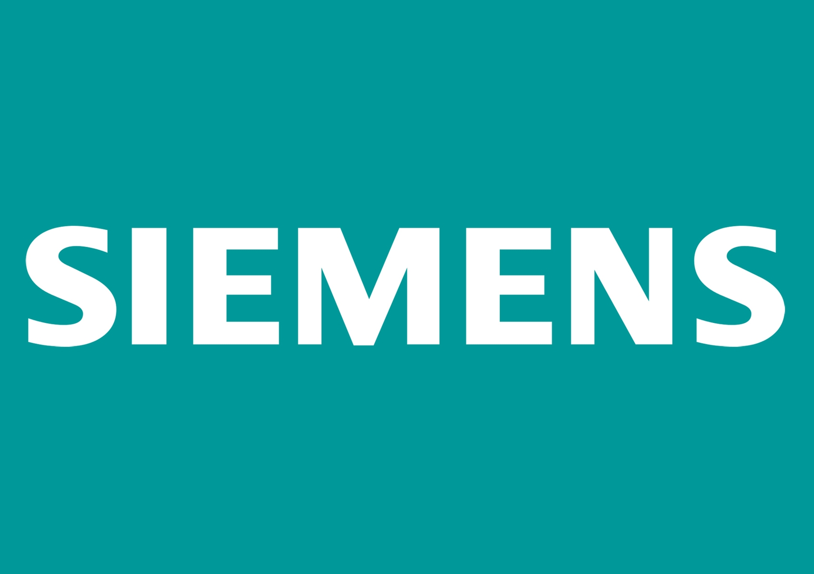
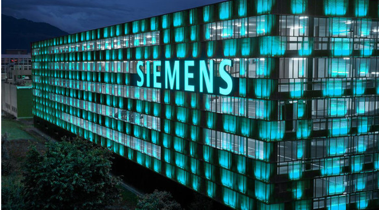

|
 essa imagem representa o logo da empresa
- [S.I.: s.n]
|
A Siemens AG é uma empresa alemã de eletrônica e engenharia elétrica fundada
no dia 1 de outubro de 1847, localizada em Berlim, ela foi o maior conglomerado
industrial da Europa e um dos maiores do mundo, a empresa possui um total de 15
divisões, seus principais setores são, energia, mobilidade, automação industrial e
saúde. A Siemens também está envolvida em áreas como infraestrutura urbana,
eletrificação, tecnologias de construção e digitalização de edifícios, entre outros,
podemos citar alguns, como por exemplo, Gestão de Energia Urbana, Gestão de
Tráfego, Tecnologia de Construção e Digitalização de Edifícios.
Com mais de 155 anos de atuação no Brasil, a empresa é líder em automação industrial de software,
infraestrutura, tecnologia predial e transportes, e apresenta foco em inovações e
desenvolvimentos de produtos e soluções de alta qualidade. Falando de países, a
Siemens AG está presente em mais de 190 países e vem crescendo ainda mais. Os
principais países nos quais a Siemens tem uma presença significativa incluem:
Alemanha, Reino Unido, Índia, China e Estados Unidos.
|
|
A Siemens tem um compromisso com a sustentabilidade em todas as áreas de seu
negócio, ela busca combater as alterações climáticas através de práticas de
produção mais eficientes, investimentos com energias renováveis e soluções
tecnológicas voltadas para a conservação de recursos. Um dos seus principais
objetivos de sustentabilidade são formulados em seu programa, chamado de “Visão
2030”, este programa estabelece metas ambiciosas para contribuir para um futuro
mais sustentável em diversas áreas-chave, para promover a sustentabilidade em
suas operações e produtos, inclui: eficiência energética; energias renováveis;
mobilidade sustentável; gestão de resíduos e reciclagem; etica e responsabilidade
social.
|
Para que seus objetivos sejam alcançados com sucesso várias medidas e ações
precisam ser implementadas em diferentes níveis da organização e em colaboração
compartes interessadas externas, aqui vão 7 aspectos necessários: Compromisso
da Alta Administração; Engajamento dos Funcionários; Inovação e Pesquisa;
Colaboração com Parceiros e Fornecedores; Transparência e Responsabilidade;
Incentivos Regulatórios e Econômicos; Inovação em Modelos de Negócios.
Ao abordar esses aspectos de forma holística e colaborativa, a Siemens pode
aumentar suas chances de alcançar com sucesso seus objetivos de
sustentabilidade e contribuir para um futuro mais sustentável e resiliente.
|
 essa imagem representa uma das empresas da Siemens - [S.I.: s.n]
|